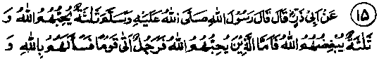
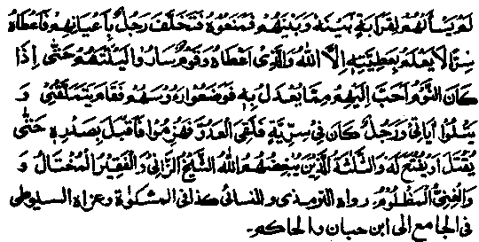
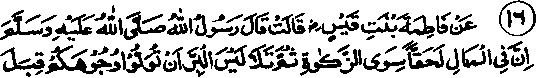
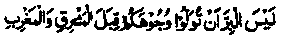
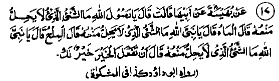
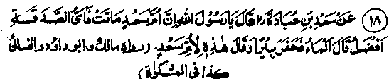

Chapter One · Section (b): Ahadith on the virtues of spending for the cause of Allah
11. The three whom Allah loves and the three whom Allah hates


Hadith 15
Rasulullah Sallallaho alaihe wasallam has said that Allah Ta'ala loves three persons and detests three. Those whom Allah loves are (1) a person who, when a beggar came and begged from some people, none of them being related to him, and was refused by them, got up quietly and gave him something secretly so that only Allah Ta'ala and the beggar knew of it; (2) a person who was one of a party that travelled all night till sleep overtook them, but when all of them went to sleep (for a short while), he got up and engaged in devotions, begging Allah's favour with importunity and reciting from the Holy Qur’an; and (3) a person who was in a detachment that fought in Jehaad and was defeated but he went straight ahead till he was martyred or granted victory. The three whom Allah Ta'ala detests are an old man who indulges in adultery, a beggar who is proud and a rich man who is oppressive.
Note: There are several different Traditions about the above subject concerning the six types of persons mentioned in this Hadith. At Ayat No. 9 under the Ayaat series above, this very Hadith has been mentioned. Some of the Traditions mention only one type of person and some, more than one. One Hadith says that there are three occasions when the prayer (Du'aa) of a person is not rejected, but certainly accepted. First, when a person offers his Salaat in a jungle alone, and no one can see him, his Du'aa is certain to be accepted; second when a person who is engaged in Jehaad along with a party, which runs away from the enemy, but he remains steadfast alone; the third is a person who stands in devotions before Allah Ta'ala in the latter part of night Allah Ta'ala will not listen to three persons on the Day of Judgement, nor will He purify them of their sins, nor look at them graciously and, for them .there will be grievous punishment First the persistent adulterer in old age; second the lying ruler, and third an arrogant beggar. In this context, ‘will not purify them’ may mean, either ‘not purify them of their sins’, or “will not commend their actions’. Another Hadith has it to the following effect There are three to whom Allah Ta'ala will not accord a look of Grace on the Day of Resurrection and they will have a severe, painful punishment an elderly man indulging in fornication, a proud beggar and a merchant who swears on all occasions, unnecessarily and repeatedly, both while buying and selling. Undoubtedly it amounts to sheer impudence towards the Divine Majesty of Allah Ta'ala to swear unnecessarily. Still another Hadith says: There are three at whom Allah Ta'ala will not look gracefully on the Day of Resurrection and they will have painful punishment; an old man indulging in fornication, a man who makes capital out of oaths, true or false, and a proud beggar who is vain of himself. (Jami-us-Saghir)
It occurs in a Hadith that Allah Ta'ala loves three persons and detests three: those whom he loves are (1) a person who joins a detachment making Jehaad, faces and fights the enemy most bravely till he is granted victory or dies a martyr, (2) a person journeying with a party of travellers who go to sleep at night, but he stands in devotional prayers till his fellow-travellers have taken rest for a while and then wakes them up, and (3) a person who is patient towards a neighbour who keeps molesting him till the two are separated by death or one of them journeying to a distant place. And the three whom Allah detests are: a merchant who swears frequently, a proud beggar and a person who, after giving Sadaqah, keeps reminding people of his generosity towards them.

Hadith 16
Rasulullah Sallallaho alaihe wasallam once said, "There is something due on property apart from Zakaat', and then recited the following Ayat (in support of what he said):

"It is not piety that you should turn your faces to the east and west...... to the end of AyaL"
Note: We have quoted the Ayat referred to in the Hadith at Sr. No. 2 above in the series of Ayaat Rasulullah Sallallaho alaihe wasallam inferred from this Ayat that, besides Zakaat, there are other obligations concerning one’s property. The Ayat explicitly encourages spending on one’s kinsmen, orphans, destitute persons, wayfarers, beggars and for setting free slaves and convicts (held in ransom for money owed by them) and paying of Zakaat has been mentioned separately. Muslim Ibne Yasaar Rahmatullah alaihe says, "Just as Salaat is of two types, the Fardh and the Nad, Zakaat is also of two types, the Fardh and Nail, and both have been mentioned in the Holy Qur’an. When asked to explain, he began to recite this Ayat in support of his view and, after reciting the first part of the Ayat which recounts the various occasions for spending (i.e. upto: ‘for setting free slaves and convicts’), he said, “All these are the occasions for giving Nafl Zakaat (Sadaqah)? He then recited the last part of the Ayat mentioning Zakaat in particular and said, ‘This is Fardh Zakaat.’ Allama Teebi Rahmatullah alaihe says, "There is something due on property apart from Zakaat? mentioned in this Hadith, indicates not to refuse a beggar nor one asking for a loan, nor any one asking to be lent things of common use, i.e. utensils like cooking pot, bowl, etc., or any one asking for some water, salt, a live coal for kindling fire, etc. Allama Qari Rahmatullah alaihe has said that the Ayat which Rasulullah Sallallaho alaihe wasallam recited in this particular Hadith applies, besides Zakaat, to the matters mentioned therein, like rights of near relations, showing favour to orphans, meeting the demands of the poor, travellers and beggars, and getting freedom for those who are slaves or prisoners.
The author of ‘Mazahire Haq’ has written that Zakaat is obligatory and has to be paid, while Sadaqah is a voluntary act and is highly praiseworthy; therefore, it must also be encouraged in the directions indicated in the aforementioned translations of the sayings of Allama Teebi and Allama Qari, confirming that Rasulullah Sallallaho alaihe wasallam read the Ayat as an authority for his views that Allah Ta'ala has praised the Momineen (believers) first for giving Sadaqah to their kith and kin and the orphans and later He praised them for establishing Salaat and paying Zakaat It is clear from this that giving of Sadaqah in the above manner is distinct from payment of Zakaat and the former is a Nafl act The statement of Rasulullah Sallallaho alaihe wasallam, "Besides Zakaat, there is something more due on property," has been established by the Ayat in question; the Nafl Sadaqah has been mentioned first, and then the obligatory one.
Allama Jassas Razi Rahmatullah alaihe has written that certain Ulama have interpreted this Ayat to mean that there are obligatory occasions for giving Sadaqah, such as spending on one’s blood relations, when any of them is in distress, or to spend on some afflicted person in danger of death, to the extent of saving his life. After that the Allama, quoting the same saying of Rasulullah Sallallaho alaihe wasallam, has said that it also implies spending on the poor kinsmen whose maintenance has been made incumbent on a person by a lawful ruler, spending on those in distress and spending on others by way of Nafl Sadaqah, as the term ‘Something due on property apart from Zakaat’ used by Rasulullah Sallallaho alaihe wasallam is applicable both to obligatory and Nafl Zakaat The ‘Fatawa Alamgiriya’ says that it is obligatory to feed a needy person when he is not in a position to earn or to go out to beg. In this particular matter, there are three points to note: first the needy one has to be fed by all those who become aware of his condition until he becomes fit to go out and fulfil all his needs; if the person or persons are not themselves able to fulfil this duty, he or they should inform others of the needy person’s condition; if this is not done nor is the person fed and he dies, all who were aware of the state of affairs would be guilty of the sin. Secondly, if the needy one is able to move but not to earn, he should be helped through obligatory Sadaqah. If he is capable of earning his livelihood, then it is not permissible for him to beg for alms. Thirdly, if a needy one is able to go out but not able to earn, it is obligatory on him to go to people and ask for Sadaqah, otherwise he will be a sinner.

Hadith 17
Buhaisah Radhiallaho anha has related that when her father asked Rasulullah Sallallaho alaihe wasallam "What is the thing not to be refused (if asked for by someone)?" Rasulullah Sallallaho alaihe wasallam replied, "Water." Her father then asked the same question again, to which Rasulullah Sallallaho alaihe wasallam replied, ‘Salt’. When her father repeated the question once again, the Prophet replied, "Whatever good you can do (to someone) is better for you."
Note: If the water is meant to be taken from the well and salt from a mine, then, according to Shariah, no one has the right to stop anyone who is in need, even when both the water and the salt are owned by someone. Rasulullah Sallallaho alaihe wasallam admonished never to refuse such simple things to a needy person, as these do not cost the owner much but the receiver’s urgent need is met As these ordinary things are commonly available in homes, their urgent need and scarcity is not felt A small quantity of salt given to someone for his curry will make his food tasty, without much loss to you. Similar is the case in respect of giving water to someone. Aishah Radhiallaho anha narrates that Rasulullah Sallallaho alaihe wasallam said, "It is improper to refuse three things to anyone: salt, water and a bit of live fire." She then said that the need for giving water was understood, but the case of salt and fire was not clear? Rasulullah Sallallaho alaihe wasallam replied, "O Humairah! When someone gives a bit of fire to a person in need, it is as if aU the things cooked on the fire were given as Sadaqah to the needy; and for the one who gives a bit of salt, all things that become tasty by its use will count as Sadaqah. So the gain to the giver is enormous". In the main Hadith, Rasulullah Sallallaho alaihe wasallam has mentioned two things as examples and then he has stated a principle, ‘to do good as much as you can to someone is good for you’, as has been well said, "Do good, and good will be done to you".
The fact is that when someone does any type of favour to another person, it is indeed a favour to oneself: Allah Ta'ala’s commandments mentioned at No. 20 of the Ayaat series above, says that whatever you spend in the path of Allah, you will receive a return from Him. At Hadith No. 2 above, it has been mentioned that two angels permanently pray to Allah Ta‘ala for a good return for those who spend for Allah’s sake and ruin for him who holds back his wealth. Under such circumstances, when one does a material favour to another person, he actually saves his wealth from an evil fate and at the same time establishes a right for a handsome return from the treasury of Allah Ta’ala. A serious consideration of the matter will reveal the truth that we are not doing any favour to another person, but it may well be that he has saved your home from plunder, which shows that he has done you a favour and not you to him.

Hadith 18
Sa’ad Radhiallaho anho enquired from Rasulullah Sallallaho alaihe wasallam that, as his mother was dead, what type of Sadaqah would be best? (for inviting Divine blessings for her soul). Rasulullah Sallallaho alaihe wasallam replied that water was the best of all. On that, Sa‘ad had a well dug, so that his mother should receive the blessings.
Note: Supplying water was considered to be the best Sadaqah, as there was scarcity of it in Madinah. All hot countries suffer from shortage of water, but there was an acute shortage in Madinah in those days. Beside this, the benefits of water are common, as also its use. One of the Ahadith says that whoever arranges a water-supply System, wherefrom men, jinns and birds drink, will keep on receiving blessings and reward until they Day of Judgment, even after his death. Abdullah Ibne Mubarak Rahmatullah alaihe was visited by a person who complained about a wound on his knee, saying that, despite continuous treatment by many physicians for the last seven years, it had not healed at all. Abdullah Ibne Mubarak Rahmatullah alaihe advised him to have a well dug at a place where drinking water was scarce and said, ‘I have full trust in Allah Ta’ala that, as soon as the water appears in the well, the wound will heal up.’ The person acted accordingly and his wound was completely cured. The famous Mohaddith Abu Abdullah Hakim Rahmatullah alaihe had some wounds on his face, which remained incurable, in spite of various treatments for a year. He requested his teacher, Abu Uthman Sabuni, Rahmatullah alaihe to make a Du‘aa for the cure of this wound. As it happened to be Friday, the teacher made a long Du‘aa, to which the whole congregation said Aamin. On the next Friday, a woman came to the congregation and presented a written note which stated that, after she returned home last Friday, she kept on praying for Hakim carefully and she saw Rasulullah Sallallaho alaihe wasallam in her dream, telling her to advise Hakim to have the arrangements of water supply extended for the Muslims. After hearing this, Hakim arranged drinking water at the door of his house for the way-farers and got the water regularly replenished along with ice. Hardly a week had passed when all the wounds were healed and his face looked much more handsome than before.
' An Hadith says that Sa‘ad Radhiallaho anho told Rasulullah Sallallaho alaihe wasallam that his mother, who had died, had performed a Hajj at his expense, used to give Sadaqah from his money and also helped her relatives and other people from his wealth. He then asked whether she would receive any returns for all these actions if he continued to perform them on her behalf. Rasulullah Sallallaho alaihe wasallam replied, "Yes, she will." Another Hadith has: A woman told Rasulullah Sallallaho alaihe wasallam that her mother had died suddenly and had not been able to give Sadaqah as she would have done in case of a normal death. She then asked whether her mother would get any benefit if she (the daughter) gave Sadaqah on her behalf. Rasulullah Sallallaho alaihe wasallam replied, "yes, do so." In fact, for all the relatives, particularly those who leave property for us after their death, like parents, husband or wife, brothers and sisters, or those who might have done us favours, like teachers and holy personages, one should regularly give Sadaqah and do other good deeds and pray for the transference of the rewards to- their account. It will be highly improper to go on benefitting from the wealth they have left behind, or from favours done by them, and yet to forget them when they are in need of receiving gifts and benefactions from the living ones. When a person dies, his own actions come to an end; unless he leaves behind a perpetually rewarding virtue or any deed of that kind, as will be explained later; he remains dependent on transference of blessings and prayers from the living ones. One Hadith says that a dead man in his grave feels like a drowning person who keenly desires help, from all directions, that his father, brother or a friend may send him as an aid in the form of a prayer. And if something is received, it becomes the dearest thing for him in that world.
Bashar Ibne Mansoor Rahmatullah alaihe says that once, during an epidemic of plague, a person busied himself very often in offering funeral prayers for the dead and in the evening he would stand at the gate of the graveyard and read this Du‘aa
"May Allah Ta'ala change your dreadful life into a pleasurable one, have mercy on your loneliness, overlook your faults and bless all your good deeds with acceptance".
He would then return home. One day it so happened that he returned home without offering the Du‘aa. At night he saw in his dream that a large crowd of people approached him. When he asked them who they were and why they were there, they replied that they were the dwellers of the graveyard, and they used to receive gifts from him every evening. He asked them, ‘What kind of gifts?’ They said that the Du'aa that he used to make every evening would be turned into gifts that reached every one of them. Thereafter the man never forgot to make that Du'aa. Bashaar Ibne Ghalib Rahmatullah alaihe Najrani says that he used to make Dua’a most frequently for Rabi'ah Basriah Rahmatullah alaiha. Once he saw her in a dream and heard her saying, "Bashaar, your gifts reach us in the trays of ‘Nur’ covered with silken covers. When he asked her what it meant, she said, "When a Muslim makes a Du'aa and it is approved, it is placed in a tray of Nur and covered with a silken cover and presented to the dead person concerned, who is told that it is a gift for him from so and so. Later in the next Hadith, several examples of this type have been given. Imaam Nawavi Rahmatullah alaihe writes in his interpretation of Muslim’s collection of Ahadith that there is no difference of opinion among Muslims regarding the dead receiving the rewards of Sadaqah given on their behalf. This is the correct belief. A few have written that the dead cannot receive any reward for the Sadaqah given on their behalf, but this is definitely wrong and a clear mistake. It goes against the Qur’an, the Ahadith of Rasulullah Sallallaho alaihe wasallam and the general consensus of opinion among Muslim people; therefore, that contention is not fit for serious consideration. (Bazl)
Shaikh Taqiyyuddin Rahmatullah alaihe says that if a person thinks that a reward is receivable only for ones own deeds, he is acting against the consensus of opinion of the whole Muslim Ummah. For, the whole Ummah is unanimously of the opinion that a person receives benefits from the prayers of other people, which means a gain from the deed of another person. As for instance, Rasulullah Sallallaho alaihe wasallam will intercede on the Day of Judgement and so will other Ambiya Alaihimussalam and men of piety, 'all of which would imply benefits from the actions of others. Likewise, the angels pray and seek pardon for the Momineen (as given in first Ruku‘ of Singh Mo’min). This, too, is a gain from the act of others. Allah Ta‘ala, by His own Mercy and Kindness, will forgive the sins of people; this will amount to benefitting without any effort from oneself. Children of-Momineen Will enter Jannah along with their parents (according to what is said in the first, Ruku’ of Surah at-Toor), which also means benefitting from others’ good deeds. A Hajj by a substitute for a deceased person counts as obligatory Hajj for the latter, which means a gain from the act of another person. And there can be more examples of this type. A venerable gentleman related that his brother had died and he saw him in his dream; he asked his brother as to what had happened to him in his grave. The deceased brother replied that, as soon as he was buried, a flame of fire came close to him; at the same time a prayer from some person reached him and stood between him and the flame. If the prayer had not been made, he would have been caught in the flame.
Ali Ibne Moosa Haddad Rahmatullah alaihe says that once he was present in a burial prayer along with Imaam Ahmad Ibne Hanbal Rahmatullah alaihe. Muhammad Ibne Qudaama Jauhari Rahmatullah alaihe was also there. After the burial, a blind man sat down near the grave and started reciting the Qur’an. Imaam Ahmad Ibne Hanbal told him that reading of Qur’an beside a grave is an unapproved innovation. On the way home, Muhammad Ibne Qud-ama asked Imaam Ahmad Ibne Hanbal Rahmatullah alaihe what he thought of Mubashir Ibne Ismail Halabi Rahmatullah alaihe. The Imaam replied that he was a noble person and that he (Imaam) had learnt Ahadith from him. Ibne Qudaama said that he had heard from Mubashir that Abdul Rahman Ibne Alaa bin Lajlaaj Rahmatullah alaihe quoted his father as saying at the time of his death, "After my burial, the first and the last part of Surah Baqarah be recited at the head of my grave, and he confirmed this by saying that he (the father) had heard Abdullah Ibne Umar Radhiallaho anho entrusting the same duty to a person at the time of his death. After hearing this, the Imaam Rahmatullah alaihe told Ibne Qudaama to return to the graveyard and to tell the blind man to continue reading the Qur’an at the grave. Muhammad Ibne Ahmad Marvazi Rahmatullah alaihe quoted Imaam Ahmad Ibne Hanbal as saying, "Whenever you go to a graveyard you should recite Surah Fateha, Ikhlas, al-Falaq and an-Nas and supplicate Allah to transmit the reward of those to the dead in the graveyard. They will certainly receive it." The author of Mughni, which is a recognised book of Fiqhe Han-bali, has quoted this very story and given a number of other examples in respect of this subject. In ‘Bazlul-Majhood’, a quotation from ‘Bahar’ indicates that if a person offers a Nafl Salaat or observes a Fast or gives something as Sadaqah, the rewards of these are transferable to any person, dead or alive, and the latter will undoubtedly receive it. In Abu Dawood (collection of Ahadith), a saying of Abu Hurairah Radhiallaho anho has been quoted that he would welcome a person who undertook to offer two or four Raka'at of Salaat at Masjid ‘Ashar (near Basrah) and supplicate Allah Ta'ala to transmit the reward to him, i.e. Abu Hurairah. (Abu Dawood).
Due attention should be given by all relatives to transmit, in this way, spiritual benefits to the dead relations. Apart from their right in that regard, one has to meet them after one’s own death. It will be a matter of great shame if their rights and obligations were forgotten while using their property for one’s own needs.